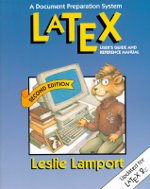
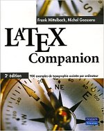
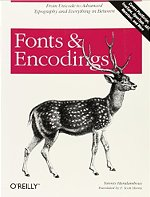

TeX and LaTeX Books
A comprehensive list of books on LaTeX and related topics in English, French, German, and Spanish. All books are useful resources for everybody from new users who wish to learn, to experienced users who are looking for a reference.
This page lists books on LaTeX and books on related topics like TeX, fonts, and encoding.
LaTeX Books
English
LaTeX: A document preparation system, User’s guide and reference manual

Edition: 2nd edition
Authors: Leslie Lamport
Language: English
Date: 1994
Publisher: Addison Wesley
ISBN-10: 0201529831
ISBN-13: 978-0201529838
Pages: 288 pages
There is an errata file for this book.
The LaTeX Companion, 2nd edition (TTCT series)
 Edition: 2nd edition
Edition: 2nd edition
Authors: Frank Mittelbach, Michel Goossens, Johannes Braams, David Carlisle, Chris Rowley
Date: 2004
Language: English
Publisher: Addison-Wesley Professional
ISBN-10: 0201362996
ISBN-13: 978-0201362992
Pages: 1120 pages
Also available as an eBook bundle consisting of PDF, mobi and ePub format without DRM, see news entry.
There are some extracts from the book as PDF files available from this site:
- tables of contents, figures, and tables and preface (176 kB)
- full text of chapter 3, «Basic formatting tools» (780 kB)
- bibliography and index (796 kB)
There is an errata file (along with a PDF version) which also has details on the bug contest: Addison-Wesley and the authors of TLC2 provide a number of prizes for people finding errors in the book.
The LaTeX Graphics Companion, 2nd edition (TTCT series)
Edition: 2nd edition
Authors: Michel Goossens, Frank Mittelbach, Sebastian Rahtz, Denis Roegel, Herbert Voss
Language: English
Date: 2007
Publisher: Addison-Wesley Professional
ISBN-10: 0321508920
ISBN-13: 078-5342508925
Pages: 976 pages
- some excerpts from the book in one PDF file (2.9 MB)
- bibliography and index (1223 kB)
- supplementary material on the web maintained by Michel Goossens
There is an errata file (along with a PDF version) which also has details on the bug contest: Addison-Wesley and the authors of LGC2 provide a number of prizes for people finding errors in the book.
The LaTeX Web Companion Integrating TeX, HTML and XML (TTCT series)
 Edition: 1st edition
Edition: 1st edition
Authors: Michel Goossens, Sebastian Rahtz
Language: English
Date: 1999
Publisher: Addison-Wesley Professional
ISBN-10: 0201433117
ISBN-13: 978-0201433111
Pages: 560 pages
Guide to LaTeX (TTCT series)
Edition: 4th edition
Authors: Helmut Kopka, Patrick W. Daly
Language: English
Date: 2003
Publisher: Addison-Wesley Professional
ISBN-10: 0321173856
ISBN-13: 978-0321173850
Pages: 624 pages
Also available as an eBook bundle consisting of PDF, mobi and ePub format without DRM.
The LaTeX Companions Third Revised Boxed Set
 Edition: 3rd revised box set
Edition: 3rd revised box set
Authors: Frank Mittelbach, Michel Goossens, Sebastian Rahtz, Denis Roegel, Herbert Voss, Helmut Kopka, Patrick W. Daly
Language: English
Date: 2008
Publisher: Addison-Wesley Professional
ISBN-10: 1847199860
ISBN-13: 978-0321514431
Pages: 3328 pages
A Complete Guide and Reference for Preparing, Illustrating and Publishing Technical Documents. This is a boxed set of the titles in the series Tools and Techniques for Computer Typesetting (TTCT) at a reduced price, consisting of the following books:
- Guide to LaTeX, 4th edition
- The LaTeX Companion, 2nd edition
- The LaTeX Graphics Companion, 2nd edition
- The LaTeX Web Companion
LaTeX Beginner’s Guide
 Edition: 1st edition
Edition: 1st edition
Author: Stefan Kottwitz
Language: English
Date: 2011
Publisher: Packt Publishing
ISBN-10: 0321173856
ISBN-13: 978-1847199867
Pages: 336 pages
The LaTeX Beginner’s Guide is packed with useful examples and explanations.
LaTeX Wikibook
 Edition: -
Edition: -
Author: Wikibooks
Language: English
Date: -
Publisher: Wikibooks
ISBN-10: -
ISBN-13: -
Pages: ~214 pages
From Wikibooks, this open-content textbook is intended to serve new users who wish to learn as well as old hands who need a quick reference. The book has a collection providing an on-demand PDF version as well as a printed book. It is available under a Creative Commons Attribution-Share Alike 3.0 license.
French
LaTeX Companion, 2e édition

Edition: 2e édition
Authors: Frank Mittelbach, Michel Goossens, Johannes Braams, David Carlisle, Chris Rowley
Language: French
Date: 2006
Publisher: Pearson
ISBN-10: 2-7440-7182-X
ISBN-13: 978-2-7440-7182-9
Pages: 1116 pages
Ce livre est la traduction de la 2e édition du The LaTeX Companion (voir ci-dessus). Des extraits du livre sont disponibles sur ce site: texte complet de l’annexe B, «Détecter et résoudre; les problèmes» (463 kB)
This book is a translation of The LaTeX Companion, 2nd edition. There is an extract from the book as PDF files available from this site: full text of appendix B, «Tracing and resolving problems» (463 kB)
German
LaTeX-Begleiter Bafög-Ausgabe (Pearson Studium - Scientific Tools)
 Edition: 2nd edition
Edition: 2nd edition
Authors: Frank Mittelbach, Michel Goossens, Johannes Braams, David Carlisle, Chris Rowley
Language: German
Date: 2010
Publisher: Pearson Studium
ISBN-10: 386894088X
ISBN-13: 978-3868940886
Pages: 1168 pages
This is a re-issue (student version) of the book Der LaTeX-Begleiter, 2. Auflage (ISBN 3-8273-7166-X) with identical content. This book is a translation of The LaTeX Companion, 2nd edition (TTCT series) with a number of adaptations to the German language.
There are some extracts from the book as PDF files available from this site:
- tables of contents, figures, and tables and preface (259 kB)
- full text of chapter 4, «Page layout» (340 kB)
- bibliography and index (857 kB)
There is an errata file (along with a PDF version) which also has details on the bug contest: Pearson Studium and the authors of LB2 provide Pearson text books as prizes for people finding errors in the book.
Jürgen Fenn has written a review for the german TeX magazine “Die TeXnische Komödie”. It is available as a PDF file (473 kB).
Einführung in LaTeX: unter Berücksichtigung von pdfLaTeX, XLaTeX und LuaLaTeX
 Edition: 1st edition
Edition: 1st edition
Author: Herbert Voss
Language: German
Date: 2012
Publisher: Lehmanns
ISBN-10: 3865414621
ISBN-13: 978-3865414625
Pages: 944 pages
Herbert has written several other books on LaTeX topics, check out his author page on amazon.de and on amazon.com.
Wissenschaftliche Arbeiten schreiben mit LaTeX: Leitfaden für Einsteiger (mitp Professional)
Edition: 5th edition
Author: Joachim Schlosser
Language: German
Date: 2013
Publisher: mitp
ISBN-10: 3826694864
ISBN-13: 978-3826694868
Pages: 328 pages
Spanish
LaTeX 2014
Edition: 2nd edition
Authors: Alexander Borbon A., Walter Mora F.
Language: Spanish
Date: 2014
Publisher: Revista digital Matemática Educación e Internet
ISBN-10: 0
ISBN-13: 978-9977-66-227-5
Pages: 304 pages
Licensed under Creative Commons Attribution-NonCommercial-NoDerivs 3.0 Unported (CC BY-NC-ND 3.0) Download is 17Mb
El libro de LaTeX
 Edition: 1st edition
Edition: 1st edition
Authors: Bernardo Cascales Salinas, Pascual Lucas Saorín, José Manuel Mira Ros, Antonio Pallarés Ruiz, Salvador Sánchez-Pedreño Guillén
Language: Spanish
Date: 2003
Publisher: Pearson Educacion
ISBN-10: 8420537799
ISBN-13: 9788420537795
Pages: -
May be difficult to find these days.
Related Reading
English
Computers & Typesetting, Volume A: The TeXbook (Hardcover)
 Edition: 1st edition
Edition: 1st edition
Author: Donald E. Knuth
Language: English
Date: 1986
Publisher: Addison-Wesley Professional
ISBN-10: 0-201-13447-0
ISBN-13: 978-0-201-13447-6
Pages: 496 pages
The TeXbook
Edition: 1st edition
Author: Donald E. Knuth
Language: English
Date: 1984
Publisher: Addison-Wesley Professional
ISBN-10: 0-201-13448-9
ISBN-13: 978-0-201-13448-3
Pages: 496 pages
Fonts & Encodings

Edition: 1st edition
Author: Yannis Haralambous
Language: English
Date: 2007
Publisher: O’Reilly Media
ISBN-10: 0596102429
ISBN-13: 978-0596102425
Pages: 1040 pages
French
Le TeXbook : Composition informatique
Edition: 1st edition
Author: Donald E. Knuth
Language: French
Date: 2003
Publisher: Vuibert
ISBN-10: 2711748197
ISBN-13: 978-2711748198
Pages: 555 pages
Fontes et Codages
 Edition: 1st edition
Edition: 1st edition
Author: Yannis Haralambous
Language: French
Date: 2004
Publisher: O’Reilly Media
ISBN-10: 284177273X
ISBN-13: 978-2841772735
Pages: 1012 pages